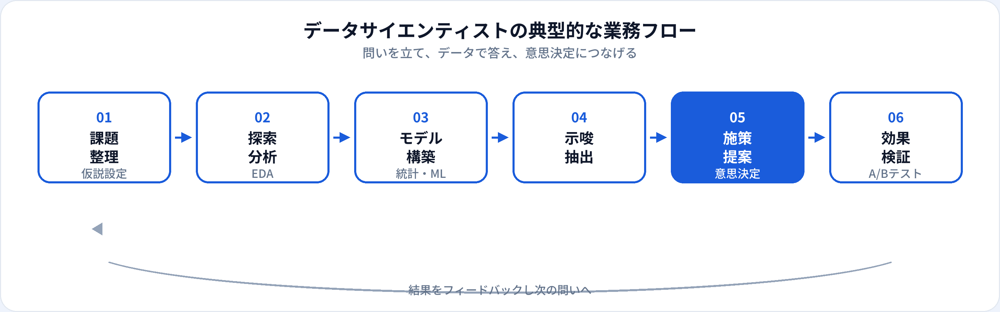

データサイエンティスト（Data Scientist）は、ビジネス上の問いをデータで検証し、分析・モデル構築・意思決定支援までを担う専門職です。機械学習エンジニアやAIエンジニアと役割が重なる組織もありますが、実務では「仮説」「示唆」「ストーリー」の比重が高いポジションとして理解されることが多いです。本記事では、年収、スキル、関連職種との違いを2026年6月時点の市場感覚で整理します。
資格・学習との関係
データサイエンティストに必要なのは、ツール操作だけでなく、回帰・分類・相関・過学習などの概念理解です。G検定では教師あり学習の種類や評価の考え方が問われ、実務面接では「なぜその分析手法を選んだか」「結果をどう意思決定に結びつけるか」が見られます。
よくある誤解は、「データサイエンティスト＝高度な深層学習だけが仕事」という考え方です。多くの現場では、探索的分析（EDA）、A/Bテスト、回帰・分類モデル、ダッシュボードによる説明のほうが日常業務の中心であることが多いです。
データサイエンティストとは
データサイエンティストは、Data Scientistとして、経営・プロダクト・マーケティングなどの課題を「データで答えられる問い」に落とし込み、分析結果をアクション可能な示唆に変換する専門職です。単なるレポート作成ではなく、施策の優先順位づけや効果測定まで関わることが多いです。
生成AIの普及以降、自然言語でのデータ要約やコード生成を補助に使うチームも増えています。一方で、因果の解釈・バイアス・サンプル設計といった統計的な判断力は、人間の役割として重要性を保っています。
仕事内容
組織によって分担は異なりますが、データサイエンティストに期待されやすい業務は次のとおりです。

課題整理・仮説設定
ステークホルダーと問いをすり合わせ。KPIと分析単位（ユーザー・注文・セッションなど）を定義する。
探索的分析（EDA）
分布・欠損・外れ値の把握。可視化でパターンを発見し、次の分析方針を決める。
統計・機械学習モデル
回帰・分類・クラスタリングなど。ビジネス制約に合わせて解釈可能性と精度のバランスを取る。
示唆の言語化
数値をストーリーに変換。不確実性や前提条件を明示し、誤解を防ぐ。
施策提案・意思決定支援
優先度・期待効果・リスクを整理。プロダクト・営業・経営への提言を行う。
効果検証
A/Bテストや因果推論で施策のインパクトを測定。学びを次のサイクルへフィードバックする。
必要スキル
| 領域 | 具体例 | 重要度の目安 |
|---|---|---|
| Python / SQL | pandas、NumPy、matplotlib/seaborn、BigQuery/SQL | 必須 |
| 統計の基礎 | 仮説検定、相関と因果の区別、信頼区間、サンプリングバイアス | 必須 |
| 機械学習 | scikit-learn、評価指標、特徴量の解釈、過学習への対処 | 求人により必須級 |
| 可視化・コミュニケーション | ダッシュボード、プレゼン、非技術者向けの説明 | 実務で差がつく |
| ドメイン知識 | EC、金融、広告、SaaSなど業界固有のKPI理解 | 中級以上で重視 |
年収相場
当サイトの職種マスタでは、データサイエンティストの年収目安を500万〜1,100万円としています（2026年6月時点の一般的な相場感）。金融・広告・大手ITなどデータドリブン文化が根付いた業界では上限が上がりやすく、コンサル出身者が社内DSとして入るケースもあります。
| 区分 | 年収の目安（日本・一般論） | 補足 |
|---|---|---|
| ジュニア | 500万〜650万円前後 | 既存分析の補助・レポーティングから入る |
| ミドル | 650万〜900万円前後 | 仮説立案から施策提案まで一人称で担当 |
| シニア | 900万〜1,100万円以上 | 分析方針の設計・チームリード・経営への提言 |
キャリアパス
-
アナリティクススペシャリスト
特定ドメイン（広告・CRM・リスクなど）の分析深化。施策設計の第一人者へ。
-
機械学習エンジニア寄り
モデル本番化・パイプライン構築のスキルを足し、実装比重を上げる。
-
データプロダクト / PM
分析結果をプロダクト機能やダッシュボードに落とし込む。企画との協業が中心。
-
ヘッドオブデータ・CDO
データ戦略・組織設計・ガバナンスを統括。マネジメント比重が上がる。
関連職種との違い
| 職種 | 主な焦点 | データサイエンティストとの違い |
|---|---|---|
| 機械学習エンジニア | 学習パイプライン・デプロイ | 実装・運用の比重が高い。DSは問い立てと示唆の比重が高いことが多い。 |
| AIエンジニア | AI機能の実装全般 | 生成AI連携など実装寄り。DSは分析・意思決定支援寄りのJDが多い。 |
| データアナリスト | SQL・BI・レポーティング | 可視化と定型レポートが中心。モデル構築・実験設計はDS寄り。 |
| データエンジニア | データ基盤・ETL | パイプライン構築が中心。分析はDSが担当することが多い。 |
未経験からの道のり
-
SQLとExcel/BIの基礎（1〜2か月）
集計・ピボット・ダッシュボードでKPIを追える状態に。
-
Pythonと統計の基礎（2〜3か月）
pandasでEDA、仮説検定・相関の概念をG検定レベルで整理。
-
分析ポートフォリオ（1〜2か月）
公開データで「問い→分析→示唆→次のアクション」まで一連でまとめる。
-
機械学習の実践（任意）
scikit-learnで分類・回帰。評価指標の選び方と解釈をREADMEに書く。
メリット・デメリット
| メリット | デメリット |
|---|---|
| ビジネス意思決定に直接インパクトを与えられる | 分析結果が採用されないこともあり、説得に時間がかかる |
| 業界を問わず需要がある汎用スキル | データ品質・定義のブレに悩みやすい |
| 統計とプログラミングの両方を伸ばせる | 「分析」と「実装」の境界が曖昧な求人も多い |
| MLエンジニア・PMなどへキャリアチェンジしやすい | 成果が数値化しにくい局面では評価が難しい |
よくある質問
データサイエンティストと機械学習エンジニアの違いは？
データサイエンティストは仮説設定・探索的分析・示唆の言語化・意思決定支援に比重が置かれることが多く、機械学習エンジニアは学習パイプライン・デプロイ・運用の実装に比重が置かれることが多いです。詳しくは機械学習エンジニアの解説も参照してください。
データサイエンティストに必要なスキルは？
Python（pandas・可視化）、SQL、統計の基礎、機械学習の概念理解、ビジネス課題への翻訳力が求められます。博士号は必須ではありません。
データサイエンティストの年収相場は？
経験・業界により幅がありますが、おおむね500万〜1,100万円前後が目安となることが多いです（2026年6月時点の一般的な相場感）。
データアナリストからデータサイエンティストになれますか？
可能です。SQLとBIの経験を土台に、統計・Python・実験設計のスキルを足すのが典型的な移行パターンです。
大学院は必要ですか？
必須ではありません。修士・博士は研究開発や高度な統計モデルが中心のポジションで有利になることはありますが、多くのWebサービス系企業では実務ポートフォリオとコミュニケーション力が重視されます。進学の判断は大学院（AI・ML）に進むべき？も参照してください。